LABA RECORDS — By Coral Bismuth
כשהלב נפתח זה יוצא לבד
אולפן הקלטות בין העצים
מכירה איך זה לשים את הלב בידיים של מישהו ולהפוך אותו לשיר.
באולפן שלי עושים את זה ביחד.
היי, אני קורל ביסמוט
היי :)
כאן נשים את הטקסט האמיתי: מה האולפן בשבילך, מה את מצליחה לייצר כל פעם מחדש, מה האני מאמין שלך, ואיך את גורמת לאמנים לצאת עם שיר שמרגיש שלהם — רק יותר חד, יותר אמיתי, יותר “זה”.
שירים שיצאו מכאן
תכלס קשה לי להגדיר מה הסגנון הפקה שלי כששואלים אותי.
כל שיר מאחוריו עולם, מאחוריו לב. ובזה אני מתמקדת.
איך אני יכולה לעטוף הכי מדוייק ונכון את הלב הזה בכלים שיש לי.
אם אנסה בכל זאת אז אני חושבת שזה תמיד יהיה מבוסס על סאונד חמים שעוטף, רוך שיכול גם לבעוט אבל שורה תחתונה והכי חשובה — משהו שהאמן ואני עומדים מאחריו וגאים בו.
ציטוטים נבחרים
התהליך
מה עושים, איך עושים, מה כולל — עם מרחב לנשום באמצע.
01
היכרות וכיוון
מגדירים יחד מה השיר צריך להרגיש, לא רק איך הוא צריך להישמע.
02
הפקה והקלטה
בונים עולם סביב הווקאל/הסיפור — שכבה־שכבה, בלי להעמיס.
03
עריכה ומיקס
פוליש עדין שמרים את השיר, אבל משאיר אותו אנושי.
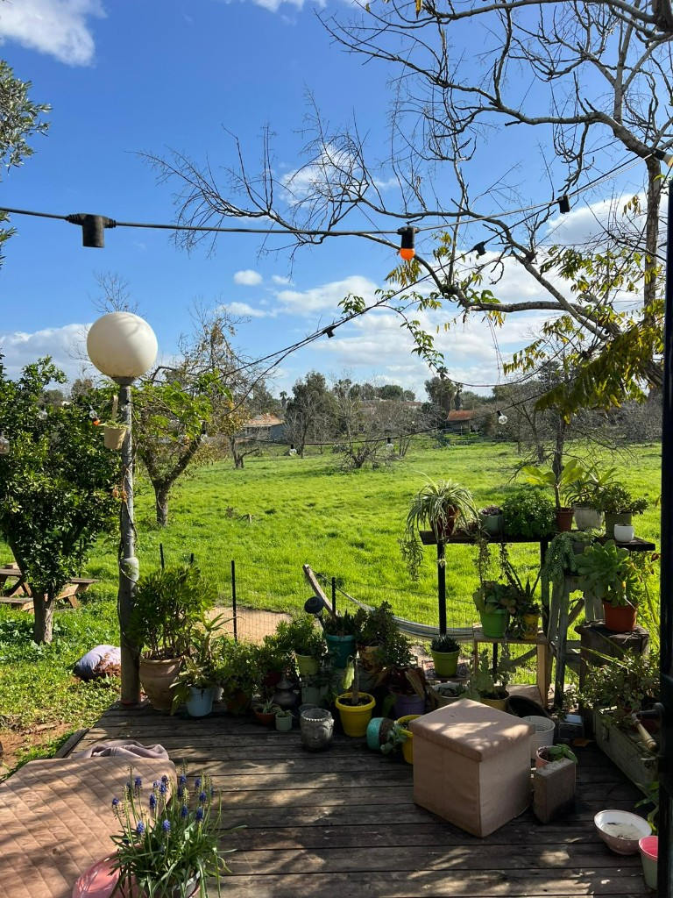
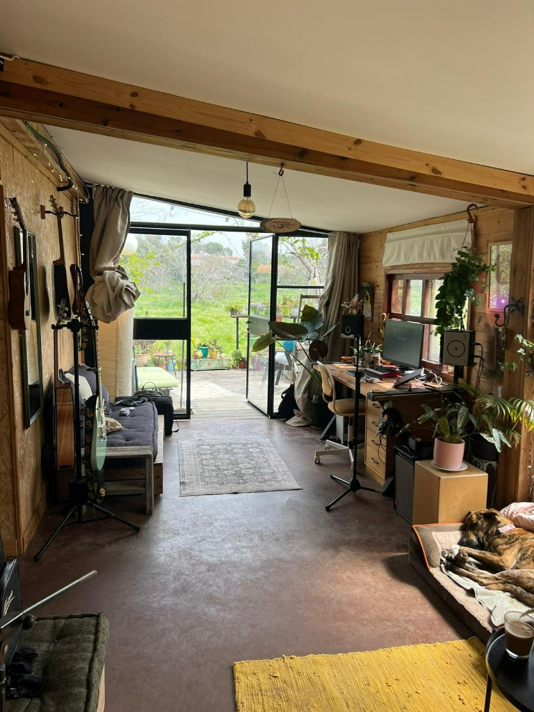
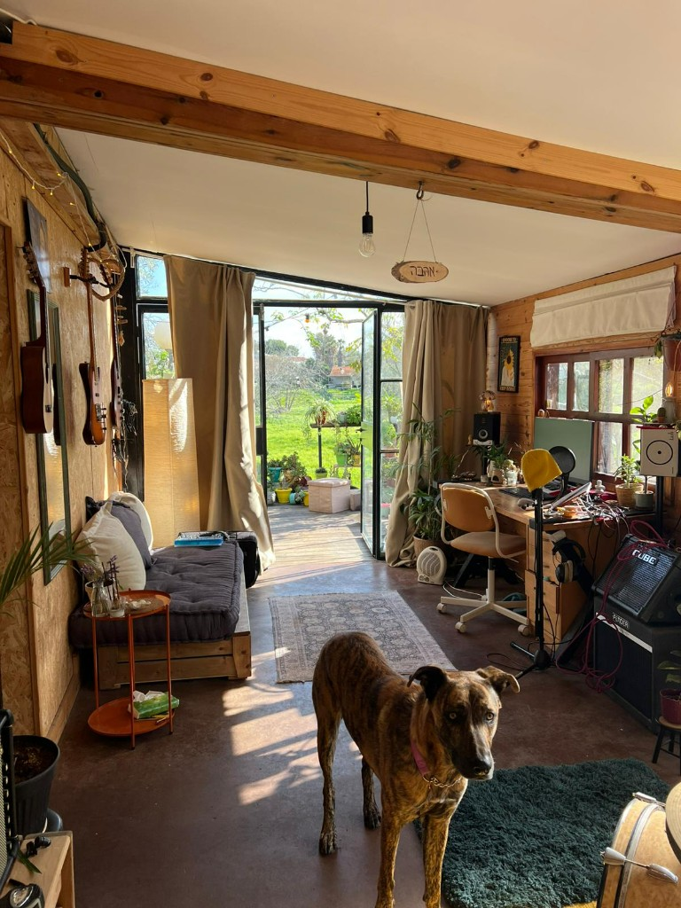
שאלות תשובות
כמה זמן לוקח להפיק שיר?
תלוי בשיר ובשלב שבו הוא מגיע. לרוב נבנה יחד תכנית קצרה כבר בשיחה הראשונה.
אפשר לבוא רק למיקס/עריכה?
כן. אפשר להצטרף בכל שלב — מהקלטה ועד מיקס סופי.
מה להביא לסשן ראשון?
דמו/סקיצה אם יש, השראות (2–3 שירים), ואת הסיפור שלך על השיר.
יש חניה? ואיפה האולפן?
כאן נשים כתובת/הנחיות הגעה כשיהיו מוכנות לפרסום.
למי הסטודיו מתאים
למי שמחפשים תהליך יצירתי-רגיש: ווקאל שמרגיש אמיתי, סאונד נקי, ואווירה שעוזרת להוריד הגנות ולתת לשיר לצאת.
איך נראה סשן אצלי?
מתחילים בשיחה קצרה לכיוון, עוברים לעבודה פרקטית (הקלטה/עריכה/מיקס לפי השלב), ובאמצע יש רגעים של נשימה וחיבור למהות של השיר.
למה אמנים נפתחים פה
כי יש מקום לבן אדם, לא רק לטכניקה. אנחנו עובדים בקצב שלך, עם פידבק עדין, ועם כלים שמאפשרים לשחרר ולהעז לשמוע את הגרסה הכי אמיתית.
קצת על האולפן
כאן נשים סרטונים מהאולפן (כולל מה שבן צילם) וגם חומרים כמו הפרסומת של אלפורו.
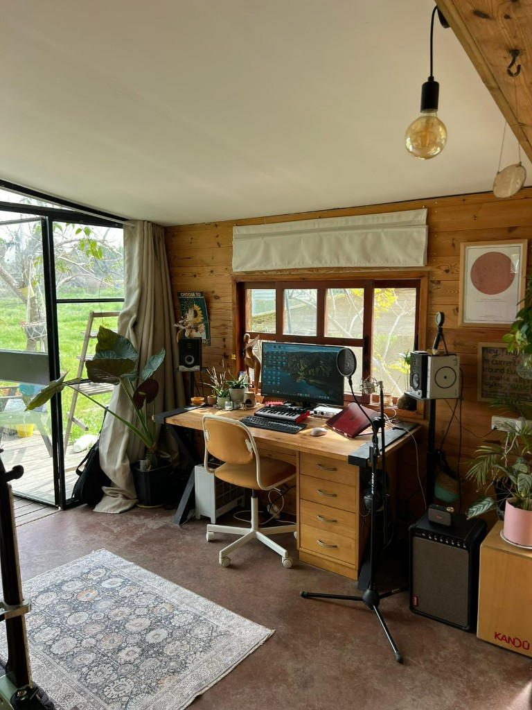
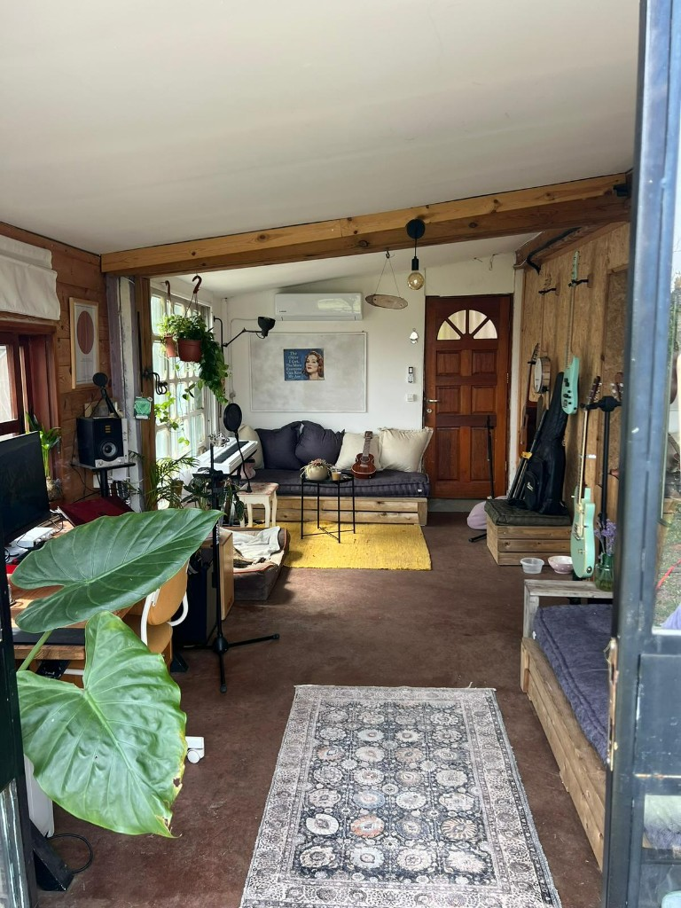
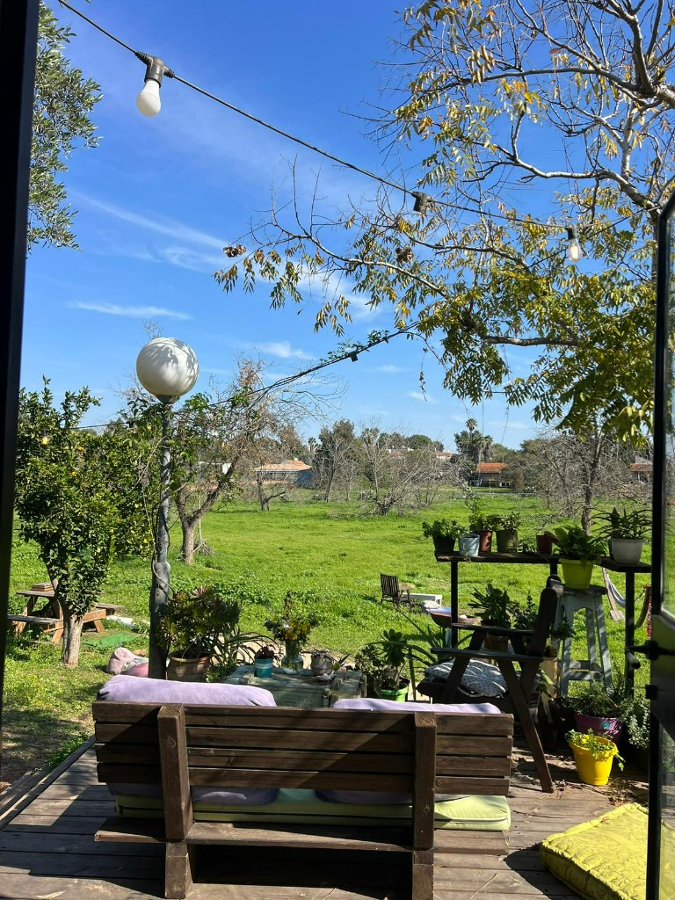
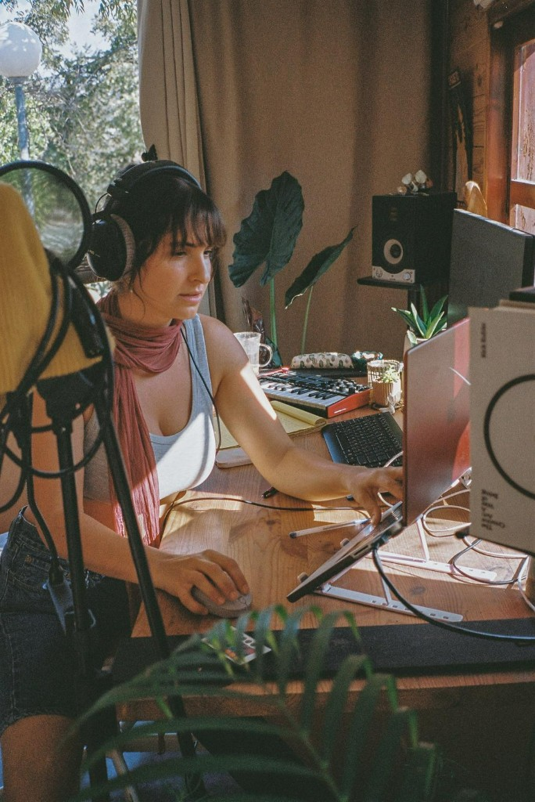
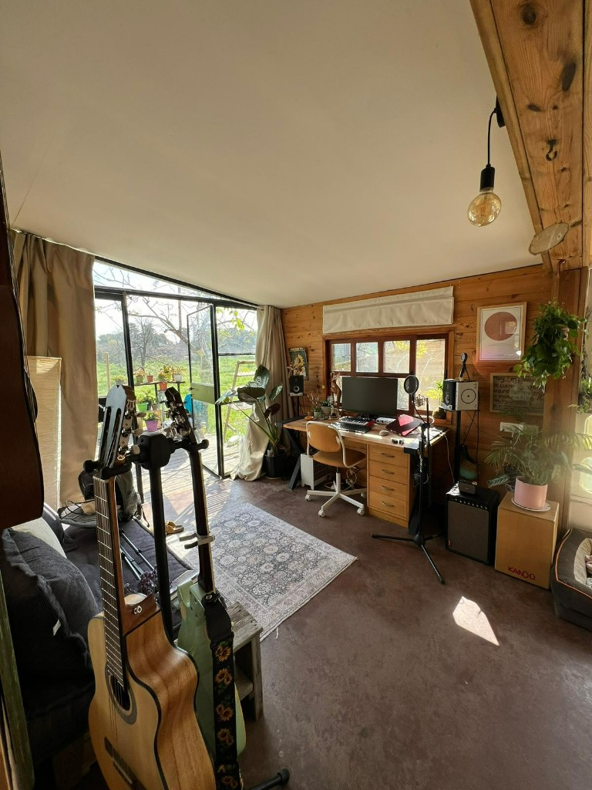
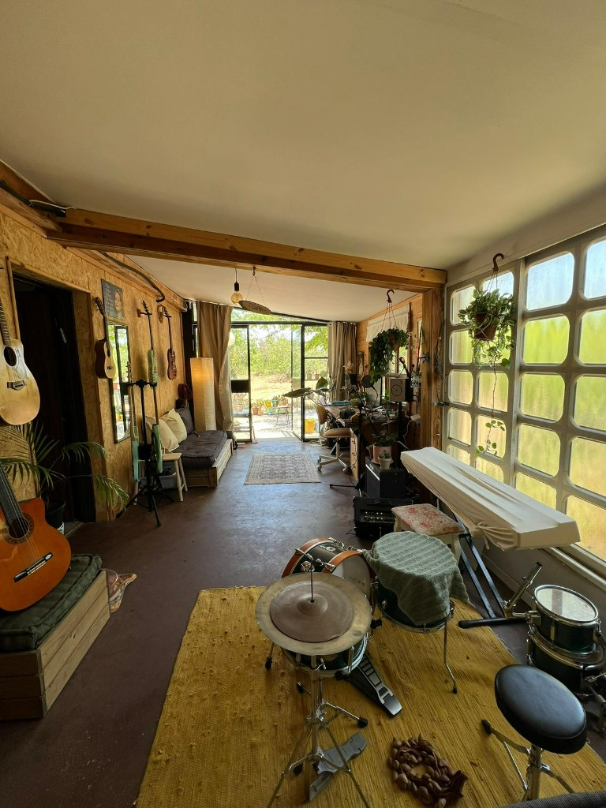
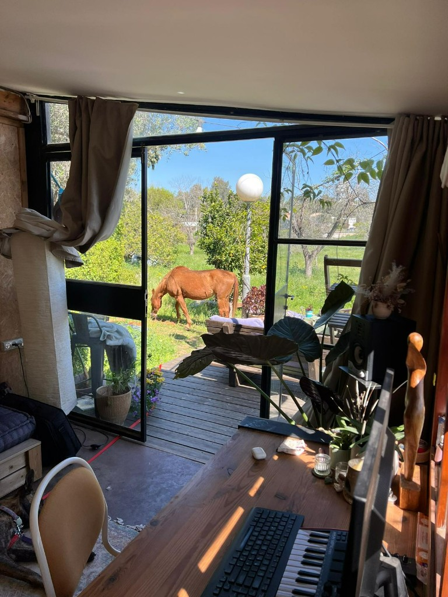
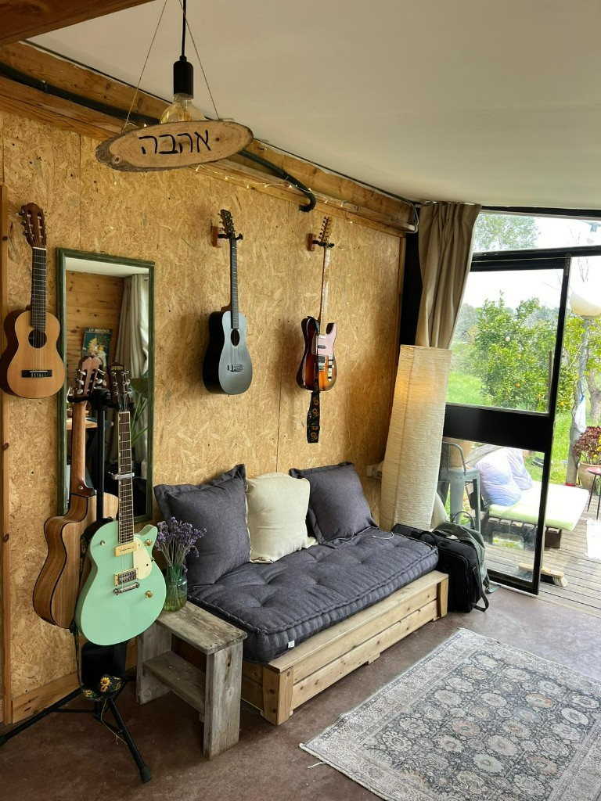